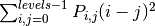
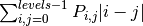
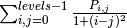
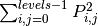
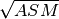
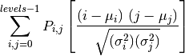

| skimage.feature.corner_foerstner(image[, sigma]) | Compute Foerstner corner measure response image. |
| skimage.feature.corner_harris(image[, ...]) | Compute Harris corner measure response image. |
| skimage.feature.corner_kitchen_rosenfeld(image) | Compute Kitchen and Rosenfeld corner measure response image. |
| skimage.feature.corner_moravec | Compute Moravec corner measure response image. |
| skimage.feature.corner_peaks(image[, ...]) | Find corners in corner measure response image. |
| skimage.feature.corner_shi_tomasi(image[, sigma]) | Compute Shi-Tomasi (Kanade-Tomasi) corner measure response image. |
| skimage.feature.corner_subpix(image, corners) | Determine subpixel position of corners. |
| skimage.feature.daisy(img[, step, radius, ...]) | Extract DAISY feature descriptors densely for the given image. |
| skimage.feature.greycomatrix(image, ...[, ...]) | Calculate the grey-level co-occurrence matrix. |
| skimage.feature.greycoprops(P[, prop]) | Calculate texture properties of a GLCM. |
| skimage.feature.hog(image[, orientations, ...]) | Extract Histogram of Oriented Gradients (HOG) for a given image. |
| skimage.feature.local_binary_pattern(image, P, R) | Gray scale and rotation invariant LBP (Local Binary Patterns). |
| skimage.feature.match_template(image, template) | Match a template to an image using normalized correlation. |
| skimage.feature.peak_local_max(image[, ...]) | Find peaks in an image, and return them as coordinates or a boolean array. |
Compute Foerstner corner measure response image.
This corner detector uses information from the auto-correlation matrix A:
A = [(imx**2) (imx*imy)] = [Axx Axy]
[(imx*imy) (imy**2)] [Axy Ayy]
Where imx and imy are the first derivatives averaged with a gaussian filter. The corner measure is then defined as:
w = det(A) / trace(A) (size of error ellipse)
q = 4 * det(A) / trace(A)**2 (roundness of error ellipse)
| Parameters : | image : ndarray
sigma : float, optional
|
|---|---|
| Returns : | w : ndarray
q : ndarray
|
References
| [R99] | http://www.ipb.uni-bonn.de/uploads/tx_ikgpublication/foerstner87.fast.pdf |
| [R100] | http://en.wikipedia.org/wiki/Corner_detection |
Examples
>>> from skimage.feature import corner_foerstner, corner_peaks
>>> square = np.zeros([10, 10])
>>> square[2:8, 2:8] = 1
>>> square
array([[ 0, 0, 0, 0, 0, 0, 0, 0, 0, 0],
[ 0, 0, 0, 0, 0, 0, 0, 0, 0, 0],
[ 0, 0, 1, 1, 1, 1, 1, 1, 0, 0],
[ 0, 0, 1, 1, 1, 1, 1, 1, 0, 0],
[ 0, 0, 1, 1, 1, 1, 1, 1, 0, 0],
[ 0, 0, 1, 1, 1, 1, 1, 1, 0, 0],
[ 0, 0, 1, 1, 1, 1, 1, 1, 0, 0],
[ 0, 0, 1, 1, 1, 1, 1, 1, 0, 0],
[ 0, 0, 0, 0, 0, 0, 0, 0, 0, 0],
[ 0, 0, 0, 0, 0, 0, 0, 0, 0, 0]])
>>> w, q = corner_foerstner(square)
>>> accuracy_thresh = 0.5
>>> roundness_thresh = 0.3
>>> foerstner = (q > roundness_thresh) * (w > accuracy_thresh) * w
>>> corner_peaks(foerstner, min_distance=1)
array([[2, 2],
[2, 7],
[7, 2],
[7, 7]])
Compute Harris corner measure response image.
This corner detector uses information from the auto-correlation matrix A:
A = [(imx**2) (imx*imy)] = [Axx Axy]
[(imx*imy) (imy**2)] [Axy Ayy]
Where imx and imy are the first derivatives averaged with a gaussian filter. The corner measure is then defined as:
det(A) - k * trace(A)**2
or:
2 * det(A) / (trace(A) + eps)
| Parameters : | image : ndarray
method : {‘k’, ‘eps’}, optional
k : float, optional
eps : float, optional
sigma : float, optional
|
|---|---|
| Returns : | response : ndarray
|
References
| [R101] | http://kiwi.cs.dal.ca/~dparks/CornerDetection/harris.htm |
| [R102] | http://en.wikipedia.org/wiki/Corner_detection |
Examples
>>> from skimage.feature import corner_harris, corner_peaks
>>> square = np.zeros([10, 10])
>>> square[2:8, 2:8] = 1
>>> square
array([[ 0, 0, 0, 0, 0, 0, 0, 0, 0, 0],
[ 0, 0, 0, 0, 0, 0, 0, 0, 0, 0],
[ 0, 0, 1, 1, 1, 1, 1, 1, 0, 0],
[ 0, 0, 1, 1, 1, 1, 1, 1, 0, 0],
[ 0, 0, 1, 1, 1, 1, 1, 1, 0, 0],
[ 0, 0, 1, 1, 1, 1, 1, 1, 0, 0],
[ 0, 0, 1, 1, 1, 1, 1, 1, 0, 0],
[ 0, 0, 1, 1, 1, 1, 1, 1, 0, 0],
[ 0, 0, 0, 0, 0, 0, 0, 0, 0, 0],
[ 0, 0, 0, 0, 0, 0, 0, 0, 0, 0]])
>>> corner_peaks(corner_harris(square), min_distance=1)
array([[2, 2],
[2, 7],
[7, 2],
[7, 7]])
Compute Kitchen and Rosenfeld corner measure response image.
The corner measure is calculated as follows:
:Parameters:
image : ndarray
Input image.
| Returns : | response : ndarray
|
|---|
Compute Moravec corner measure response image.
This is one of the simplest corner detectors and is comparatively fast but has several limitations (e.g. not rotation invariant).
| Parameters : | image : ndarray
window_size : int, optional (default 1)
|
|---|---|
| Returns : | response : ndarray
|
References
..[1] http://kiwi.cs.dal.ca/~dparks/CornerDetection/moravec.htm ..[2] http://en.wikipedia.org/wiki/Corner_detection
Examples
>>> from skimage.feature import moravec, peak_local_max
>>> square = np.zeros([7, 7])
>>> square[3, 3] = 1
>>> square
array([[ 0., 0., 0., 0., 0., 0., 0.],
[ 0., 0., 0., 0., 0., 0., 0.],
[ 0., 0., 0., 0., 0., 0., 0.],
[ 0., 0., 0., 1., 0., 0., 0.],
[ 0., 0., 0., 0., 0., 0., 0.],
[ 0., 0., 0., 0., 0., 0., 0.],
[ 0., 0., 0., 0., 0., 0., 0.]])
>>> moravec(square)
array([[ 0., 0., 0., 0., 0., 0., 0.],
[ 0., 0., 0., 0., 0., 0., 0.],
[ 0., 0., 1., 1., 1., 0., 0.],
[ 0., 0., 1., 2., 1., 0., 0.],
[ 0., 0., 1., 1., 1., 0., 0.],
[ 0., 0., 0., 0., 0., 0., 0.],
[ 0., 0., 0., 0., 0., 0., 0.]])
Find corners in corner measure response image.
This differs from skimage.feature.peak_local_max in that it suppresses multiple connected peaks with the same accumulator value.
| Parameters : | See `skimage.feature.peak_local_max`. : |
|---|---|
| Returns : | See `skimage.feature.peak_local_max`. : |
Examples
>>> from skimage.feature import peak_local_max, corner_peaks
>>> response = np.zeros((5, 5))
>>> response[2:4, 2:4] = 1
>>> response
array([[ 0., 0., 0., 0., 0.],
[ 0., 0., 0., 0., 0.],
[ 0., 0., 1., 1., 0.],
[ 0., 0., 1., 1., 0.],
[ 0., 0., 0., 0., 0.]])
>>> peak_local_max(response, exclude_border=False)
array([[2, 2],
[2, 3],
[3, 2],
[3, 3]])
>>> corner_peaks(response, exclude_border=False)
array([[2, 2]])
>>> corner_peaks(response, exclude_border=False, min_distance=0)
array([[2, 2],
[2, 3],
[3, 2],
[3, 3]])
Compute Shi-Tomasi (Kanade-Tomasi) corner measure response image.
This corner detector uses information from the auto-correlation matrix A:
A = [(imx**2) (imx*imy)] = [Axx Axy]
[(imx*imy) (imy**2)] [Axy Ayy]
Where imx and imy are the first derivatives averaged with a gaussian filter. The corner measure is then defined as the smaller eigenvalue of A:
((Axx + Ayy) - sqrt((Axx - Ayy)**2 + 4 * Axy**2)) / 2
| Parameters : | image : ndarray
sigma : float, optional
|
|---|---|
| Returns : | response : ndarray
|
References
| [R103] | http://kiwi.cs.dal.ca/~dparks/CornerDetection/harris.htm |
| [R104] | http://en.wikipedia.org/wiki/Corner_detection |
Examples
>>> from skimage.feature import corner_shi_tomasi, corner_peaks
>>> square = np.zeros([10, 10])
>>> square[2:8, 2:8] = 1
>>> square
array([[ 0, 0, 0, 0, 0, 0, 0, 0, 0, 0],
[ 0, 0, 0, 0, 0, 0, 0, 0, 0, 0],
[ 0, 0, 1, 1, 1, 1, 1, 1, 0, 0],
[ 0, 0, 1, 1, 1, 1, 1, 1, 0, 0],
[ 0, 0, 1, 1, 1, 1, 1, 1, 0, 0],
[ 0, 0, 1, 1, 1, 1, 1, 1, 0, 0],
[ 0, 0, 1, 1, 1, 1, 1, 1, 0, 0],
[ 0, 0, 1, 1, 1, 1, 1, 1, 0, 0],
[ 0, 0, 0, 0, 0, 0, 0, 0, 0, 0],
[ 0, 0, 0, 0, 0, 0, 0, 0, 0, 0]])
>>> corner_peaks(corner_shi_tomasi(square), min_distance=1)
array([[2, 2],
[2, 7],
[7, 2],
[7, 7]])
Determine subpixel position of corners.
| Parameters : | image : ndarray
corners : (N, 2) ndarray
window_size : int, optional
alpha : float, optional
|
|---|---|
| Returns : | positions : (N, 2) ndarray
|
References
| [R105] | http://www.ipb.uni-bonn.de/uploads/tx_ikgpublication/ foerstner87.fast.pdf |
| [R106] | http://en.wikipedia.org/wiki/Corner_detection |
Extract DAISY feature descriptors densely for the given image.
DAISY is a feature descriptor similar to SIFT formulated in a way that allows for fast dense extraction. Typically, this is practical for bag-of-features image representations.
The implementation follows Tola et al. [R107] but deviate on the following points:
- Histogram bin contribution are smoothed with a circular Gaussian window over the tonal range (the angular range).
- The sigma values of the spatial Gaussian smoothing in this code do not match the sigma values in the original code by Tola et al. [R108]. In their code, spatial smoothing is applied to both the input image and the center histogram. However, this smoothing is not documented in [R107] and, therefore, it is omitted.
| Parameters : | img : (M, N) array
step : int, optional
radius : int, optional
rings : int, optional
histograms : int, optional
orientations : int, optional
normalization : [ ‘l1’ | ‘l2’ | ‘daisy’ | ‘off’ ], optional
sigmas : 1D array of float, optional
ring_radii : 1D array of int, optional
visualize : bool, optional
|
|---|---|
| Returns : | descs : array
descs_img : (M, N, 3) array (only if visualize==True)
|
References
| [R107] | (1, 2, 3) Tola et al. “Daisy: An efficient dense descriptor applied to wide- baseline stereo.” Pattern Analysis and Machine Intelligence, IEEE Transactions on 32.5 (2010): 815-830. |
| [R108] | (1, 2) http://cvlab.epfl.ch/alumni/tola/daisy.html |
Calculate the grey-level co-occurrence matrix.
A grey level co-occurence matrix is a histogram of co-occuring greyscale values at a given offset over an image.
| Parameters : | image : array_like of uint8
distances : array_like
angles : array_like
levels : int, optional
symmetric : bool, optional
normed : bool, optional
|
|---|---|
| Returns : | P : 4-D ndarray
|
References
| [R109] | The GLCM Tutorial Home Page, http://www.fp.ucalgary.ca/mhallbey/tutorial.htm |
| [R110] | Pattern Recognition Engineering, Morton Nadler & Eric P. Smith |
| [R111] | Wikipedia, http://en.wikipedia.org/wiki/Co-occurrence_matrix |
Examples
Compute 2 GLCMs: One for a 1-pixel offset to the right, and one for a 1-pixel offset upwards.
>>> image = np.array([[0, 0, 1, 1],
... [0, 0, 1, 1],
... [0, 2, 2, 2],
... [2, 2, 3, 3]], dtype=np.uint8)
>>> result = greycomatrix(image, [1], [0, np.pi/2], levels=4)
>>> result[:, :, 0, 0]
array([[2, 2, 1, 0],
[0, 2, 0, 0],
[0, 0, 3, 1],
[0, 0, 0, 1]], dtype=uint32)
>>> result[:, :, 0, 1]
array([[3, 0, 2, 0],
[0, 2, 2, 0],
[0, 0, 1, 2],
[0, 0, 0, 0]], dtype=uint32)
Calculate texture properties of a GLCM.
Compute a feature of a grey level co-occurrence matrix to serve as a compact summary of the matrix. The properties are computed as follows:
‘contrast’: 
‘dissimilarity’: 
‘homogeneity’: 
‘ASM’: 
‘energy’: 

| Parameters : | P : ndarray
prop : {‘contrast’, ‘dissimilarity’, ‘homogeneity’, ‘energy’, ‘correlation’, ‘ASM’}, optional
|
|---|---|
| Returns : | results : 2-D ndarray
|
References
| [R112] | The GLCM Tutorial Home Page, http://www.fp.ucalgary.ca/mhallbey/tutorial.htm |
Examples
Compute the contrast for GLCMs with distances [1, 2] and angles [0 degrees, 90 degrees]
>>> image = np.array([[0, 0, 1, 1],
... [0, 0, 1, 1],
... [0, 2, 2, 2],
... [2, 2, 3, 3]], dtype=np.uint8)
>>> g = greycomatrix(image, [1, 2], [0, np.pi/2], levels=4,
... normed=True, symmetric=True)
>>> contrast = greycoprops(g, 'contrast')
>>> contrast
array([[ 0.58333333, 1. ],
[ 1.25 , 2.75 ]])
Extract Histogram of Oriented Gradients (HOG) for a given image.
Compute a Histogram of Oriented Gradients (HOG) by
- (optional) global image normalisation
- computing the gradient image in x and y
- computing gradient histograms
- normalising across blocks
- flattening into a feature vector
| Parameters : | image : (M, N) ndarray
orientations : int
pixels_per_cell : 2 tuple (int, int)
cells_per_block : 2 tuple (int,int)
visualise : bool, optional
normalise : bool, optional
|
|---|---|
| Returns : | newarr : ndarray
hog_image : ndarray (if visualise=True)
|
References
Gray scale and rotation invariant LBP (Local Binary Patterns).
LBP is an invariant descriptor that can be used for texture classification.
| Parameters : | image : (N, M) array
P : int
R : float
method : {‘default’, ‘ror’, ‘uniform’, ‘var’}
|
|---|---|
| Returns : | output : (N, M) array
|
References
| [R113] | Multiresolution Gray-Scale and Rotation Invariant Texture Classification with Local Binary Patterns. Timo Ojala, Matti Pietikainen, Topi Maenpaa. http://www.rafbis.it/biplab15/images/stories/docenti/Danielriccio/ Articoliriferimento/LBP.pdf, 2002. |
| [R114] | Face recognition with local binary patterns. Timo Ahonen, Abdenour Hadid, Matti Pietikainen, http://citeseerx.ist.psu.edu/viewdoc/summary?doi=10.1.1.214.6851, 2004. |
Match a template to an image using normalized correlation.
The output is an array with values between -1.0 and 1.0, which correspond to the probability that the template is found at that position.
| Parameters : | image : array_like
template : array_like
pad_input : bool
|
|---|---|
| Returns : | output : ndarray
|
Examples
>>> template = np.zeros((3, 3))
>>> template[1, 1] = 1
>>> print(template)
[[ 0. 0. 0.]
[ 0. 1. 0.]
[ 0. 0. 0.]]
>>> image = np.zeros((6, 6))
>>> image[1, 1] = 1
>>> image[4, 4] = -1
>>> print(image)
[[ 0. 0. 0. 0. 0. 0.]
[ 0. 1. 0. 0. 0. 0.]
[ 0. 0. 0. 0. 0. 0.]
[ 0. 0. 0. 0. 0. 0.]
[ 0. 0. 0. 0. -1. 0.]
[ 0. 0. 0. 0. 0. 0.]]
>>> result = match_template(image, template)
>>> print(np.round(result, 3))
[[ 1. -0.125 0. 0. ]
[-0.125 -0.125 0. 0. ]
[ 0. 0. 0.125 0.125]
[ 0. 0. 0.125 -1. ]]
>>> result = match_template(image, template, pad_input=True)
>>> print(np.round(result, 3))
[[-0.125 -0.125 -0.125 0. 0. 0. ]
[-0.125 1. -0.125 0. 0. 0. ]
[-0.125 -0.125 -0.125 0. 0. 0. ]
[ 0. 0. 0. 0.125 0.125 0.125]
[ 0. 0. 0. 0.125 -1. 0.125]
[ 0. 0. 0. 0.125 0.125 0.125]]
Find peaks in an image, and return them as coordinates or a boolean array.
Peaks are the local maxima in a region of 2 * min_distance + 1 (i.e. peaks are separated by at least min_distance).
NOTE: If peaks are flat (i.e. multiple adjacent pixels have identical intensities), the coordinates of all such pixels are returned.
| Parameters : | image : ndarray of floats
min_distance : int
threshold_abs : float
threshold_rel : float
exclude_border : bool
indices : bool
num_peaks : int
footprint : ndarray of bools, optional
labels : ndarray of ints, optional
|
|---|---|
| Returns : | output : (N, 2) array or ndarray of bools
|
Notes
The peak local maximum function returns the coordinates of local peaks (maxima) in a image. A maximum filter is used for finding local maxima. This operation dilates the original image. After comparison between dilated and original image, peak_local_max function returns the coordinates of peaks where dilated image = original.
Examples
>>> im = np.zeros((7, 7))
>>> im[3, 4] = 1
>>> im[3, 2] = 1.5
>>> im
array([[ 0. , 0. , 0. , 0. , 0. , 0. , 0. ],
[ 0. , 0. , 0. , 0. , 0. , 0. , 0. ],
[ 0. , 0. , 0. , 0. , 0. , 0. , 0. ],
[ 0. , 0. , 1.5, 0. , 1. , 0. , 0. ],
[ 0. , 0. , 0. , 0. , 0. , 0. , 0. ],
[ 0. , 0. , 0. , 0. , 0. , 0. , 0. ],
[ 0. , 0. , 0. , 0. , 0. , 0. , 0. ]])
>>> peak_local_max(im, min_distance=1)
array([[3, 2],
[3, 4]])
>>> peak_local_max(im, min_distance=2)
array([[3, 2]])